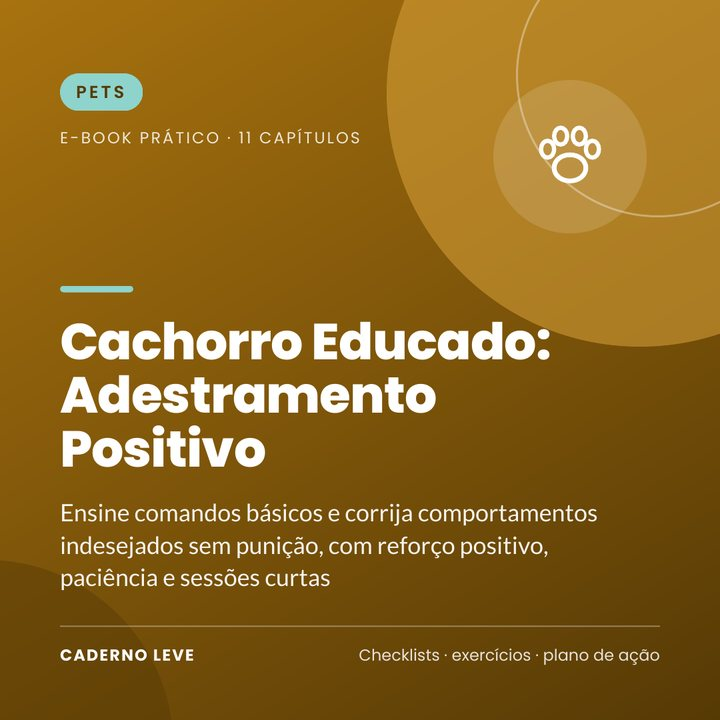

Cachorro Educado: Adestramento Positivo
Ensine comandos básicos e corrija comportamentos sem punição: senta, deita, fica, vem, passeio sem puxar, xixi no lugar, mordidas, latidos e ansiedade.
O link de compra deste e-book ainda está sendo configurado na Kiwify.
Pagamento seguro e entrega do PDF pela Kiwify
Seu cachorro puxa a guia, pula nas visitas ou faz xixi fora do lugar? Ensine com reforço positivo, sem punição.
O Cachorro Educado é um guia prático de adestramento positivo para tutores, com passo a passo e sessões curtas.
Você aprende como os cães aprendem, a preparar o treino, ensinar senta, deita, fica e vem, passear sem puxar, acertar o lugar do xixi, lidar com mordidas, pulos, latidos e ansiedade, e seguir um plano de 4 semanas.
O que você vai conquistar
- Passo a passo dos comandos básicos
- Guia do xixi no lugar certo
- Soluções para pulos e latidos
- Orientações sobre ansiedade e medos
- Plano de 4 semanas
O que tem dentro
- Capítulo 1Como os cães aprendem
- Capítulo 2Preparando o treino
- Capítulo 3Senta e deita
- Capítulo 4Fica e vem
- Capítulo 5Passear sem puxar
- Capítulo 6Xixi e cocô no lugar certo
- Capítulo 7Mordidas de filhote e roer objetos
- Capítulo 8Pular nas pessoas e latidos
- Capítulo 9Ansiedade de separação e medos
- Capítulo 10Socialização e convivência
- Capítulo 11Plano de 4 semanas
- ExtraResumo e plano de ação para colocar em prática
- ExtraFolha de trabalho e checklist para imprimir
Para quem é
- Tutores de filhotes
- Quem adotou um cão adulto
- Famílias com cães e crianças
Para quem não é
- Não substitui o médico-veterinário
- Não trata casos de agressividade grave
Bônus: Folha “Diário de adestramento” — regras da casa e progresso semanal.
Aviso importante
Este e-book tem caráter educativo. Ele não substitui a orientação de um médico-veterinário nem de um adestrador ou especialista em comportamento animal. Mudanças bruscas de comportamento podem ter causa de saúde: leve seu animal ao veterinário. Em casos de agressividade, procure um profissional.